all transients in sector09 (26 total)
Each figure has three panels. The top panel shows the transient light curve, the middle panel shows the local background (estimated in an annulus), and the bottom panel shows a "background-model corrected" light curve. Details about the background model are in the README.
The vertical red line marks the time of discovery reported to TNS. Other useful metadata from TNS is in the figure title.
Note that the top and bottom panel are in magnitudes, while the middle panel is in differential flux units. The magnitudes are calibrated to the flux in the reference image used for image subtraction. Thus, flux from the host galaxy is included in these magnitudes.
3-sigma upper limits are plotted as triangles with no errorbars. A typical limiting magnitude is 19.6 in 30 minutes or 18.4 in 200 seconds (for low backgrounds).
The links allow you to download the light curve data as a text file.
More details in the README.
2019bql 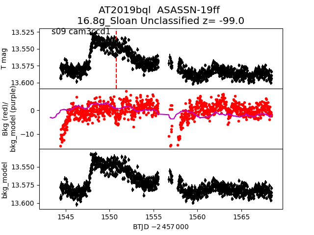 2019cml 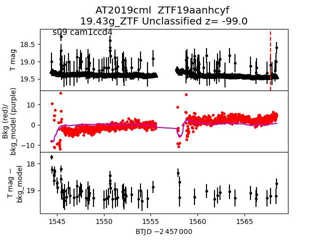 2019cjz 2019cix 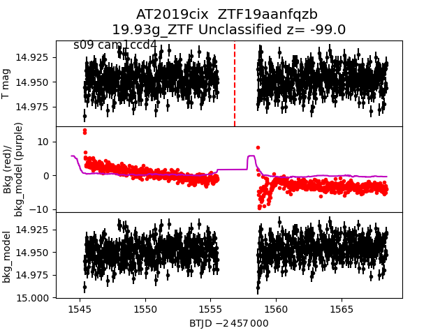 2019bwo 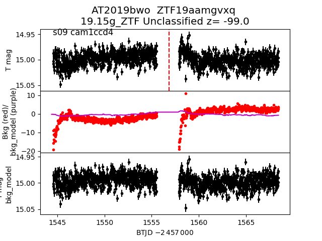 2019biu 2019bop 2019boo 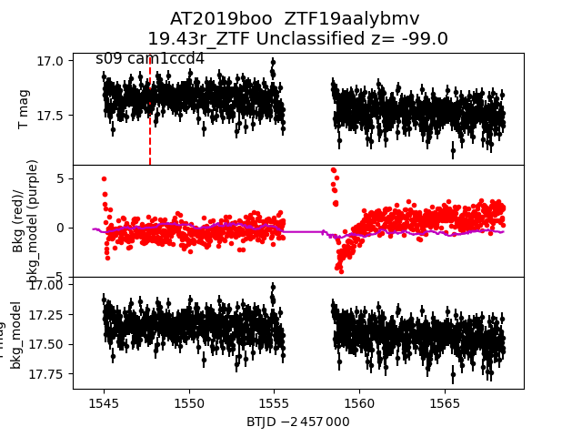 2019cjp 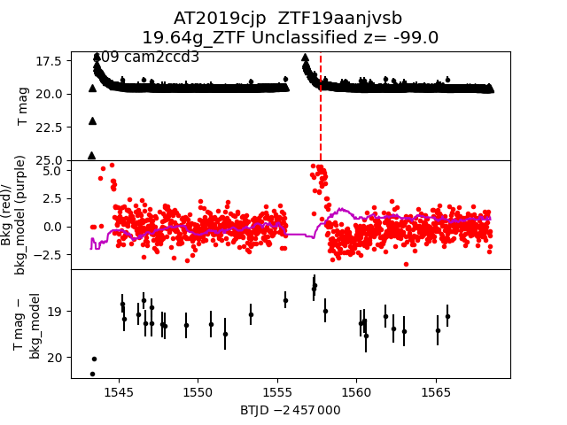 2019czn 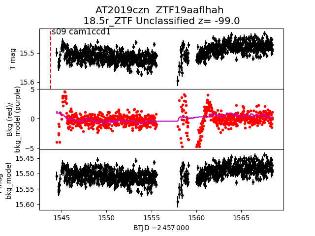 2019bvp 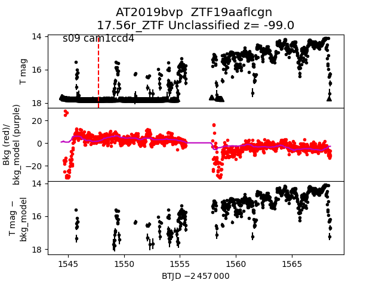 2019bwu 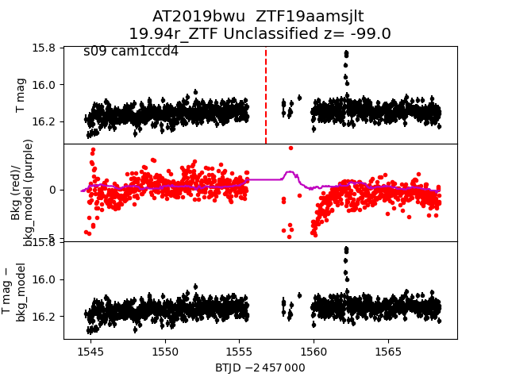 2019bip 2019bxg 2019bsw 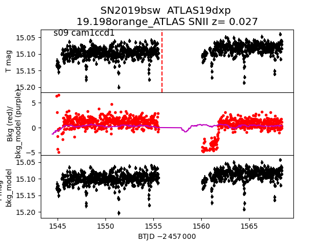 2019cqf 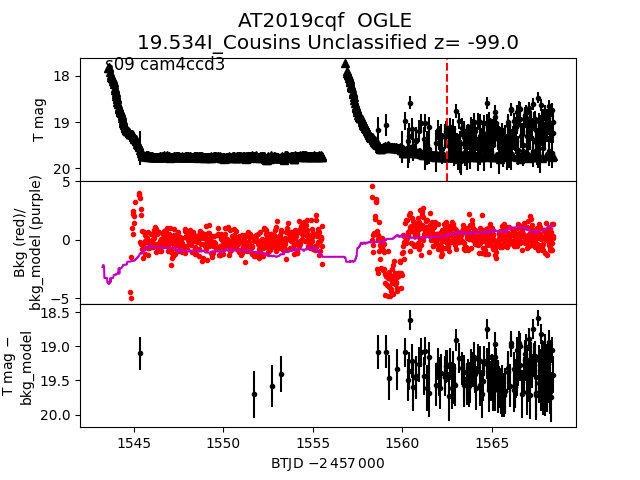 2019bxi 2019bxl 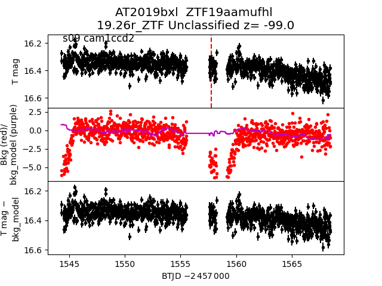 2019biq 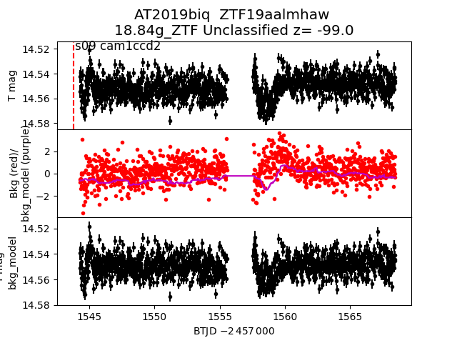 2019bwb 2019bqk 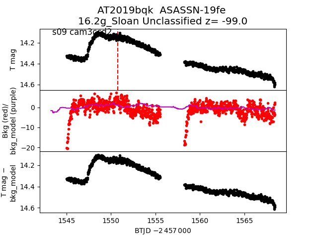 2019boq 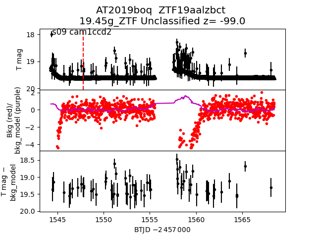 2019dcj 2019cdy 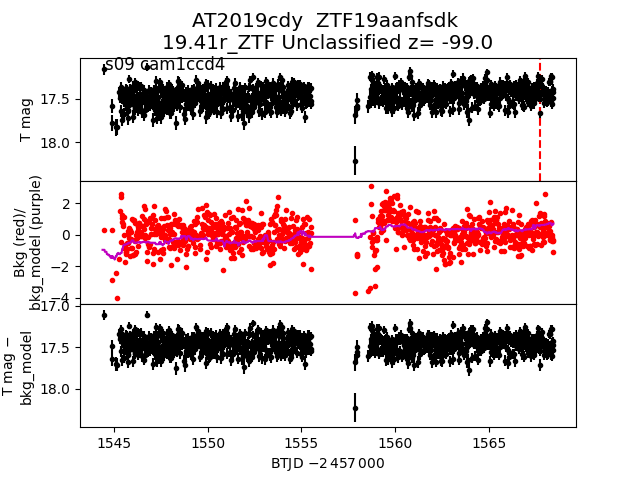 2019bnk 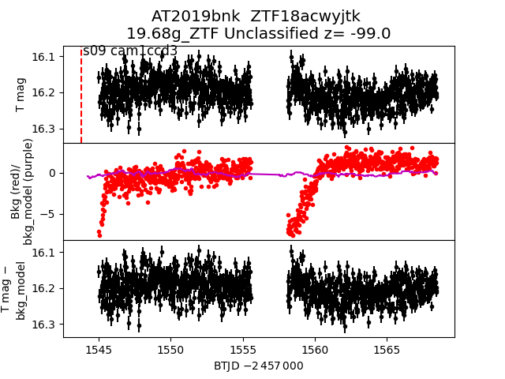 2019box